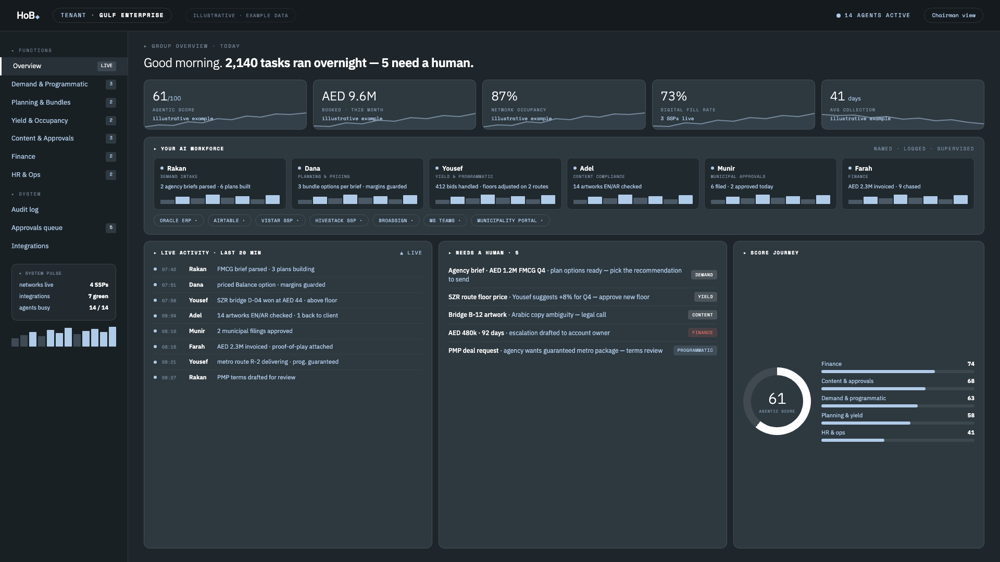
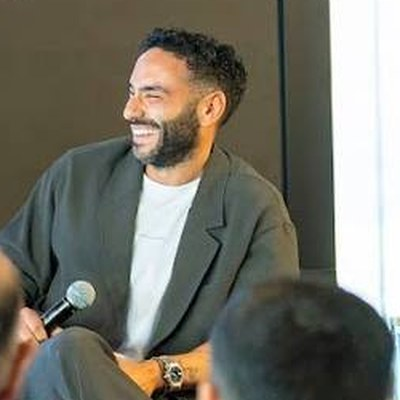

Reads every past proposal and win/loss, watches live data, and turns an enquiry into priced options the same morning — a human reviews and sends.
Chases every invoice on time, tone-matched per account, reconciles payments — and escalates only the one that truly needs you.
Reads your systems continuously — month-end answers exist Monday morning, drillable, with the why attached.
Prices capacity — screens, rooms, slots — from live demand, audience and occupancy, inside human-set floors, every change logged.
Models every site or asset: replace the equipment or innovate around it — a ranked plan that recalculates as prices move.
Compliance checks, filings and permits — prepared, submitted and tracked, in English and Arabic, with a full audit trail.
Inside the systems you already run — ERP, spreadsheets, messaging — through secure, permissioned access, the way open banking connects apps to accounts. For sensitive work, the AI models run on your own infrastructure: your data never leaves your walls.
Every engagement carries a simple score from 0 to 100 — how much of the work runs agentically. It climbs as agents take on more, and it keeps both sides honest about progress. A measure, not a promise.


Led growth & strategy at Hub71 — helping Abu Dhabi become a global tech hub and helping government and enterprises innovate. Saw from the inside why startups, funds and venture builders succeed or fail — then built his own company, run almost entirely by an AI workforce.
Founder of an AI engineering company serving enterprise clients across the region; has built and led large technical teams. Owns HoB's agentic platform and its sovereign architecture — models on your infrastructure, data that never leaves.
Run on AI. We map your organisation, automate what pays first, and hand you a cockpit where you watch it work — sovereign, auditable, inside your own walls.
Enter the Gulf with an operator. Joint ventures and soft-landing for proven technology — we bring the local channels, the compliance path and the operating hand your portfolio needs here.
Run one of our spin-offs. Our ventures are born with paying customers and real founder equity for the operator who runs them. If you build fast and own outcomes, talk to us.